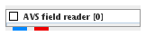

|
|
|

Reads AVS/Express field files.
| input port | type | description | data acceptors |
|---|---|---|---|
| output port | type | description | data schemas |
| outField | VNRegularField | Regular Field |
|
| outObj | VNGeometryObject |
AVS FIELD READER
The module reads AVS/Express field data files.
Output data
The output field is regular. A geometry object of the field.
Computation parameters

To select an input file click the browse button and select a file in the file browser or type the file name into the text input field below the button.
A radio button panel defines the binary data type as XDR (big endian), X86 (little endian), local native or file specified.
The show check box ....?
To reread the same input file select the reread button.
After reading in data from the input file there appears some basic information about the data:

Presentation parameters
Presentation tab contents are described in the common interfaces section unter the Presentation Panel entry.